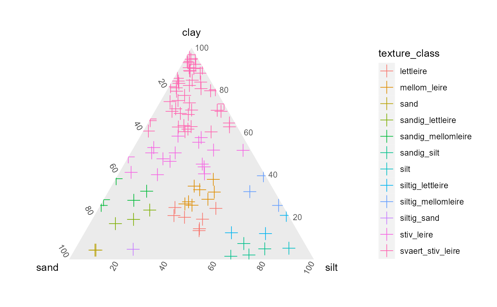

Reads in soil clay, silt, sand fractions and returns soil classification based on USDA or Norwegian definitions.
Usage
classify_soil(
input,
output,
wd = NULL,
version = "NOR",
plot_result = TRUE,
interactive = TRUE,
sheet = 1,
decimal = ",",
append = TRUE,
new_sums = FALSE,
write = FALSE
)Arguments
- input
path to input file (supported: .xlsx/.csv)
- output
file name of output (select between csv or excel) (ie: .xlsx/.csv)
- wd
path to desired working directory. Default is current.
- version
"NOR" for Norwegian, "USDA" for USDA.
- plot_result
TRUE/FALSE display diagnostic plot?
- interactive
if plot is true, do you want an interactive or static plot?
- sheet
If using excel, specify which sheet the data is in. 1 by default
- decimal
Specify decimal separator ("," or "."). By default ","
- append
append results to existing dataframe? (TRUE) or return single column (FALSE). default TRUE.
- new_sums
append new "rounded sums" to input dataframe? Default FALSE
- write
optional flag to stop the function from writing any files. Default FALSE
Details
Automatically Compatible with csv or xlsx.
Tries to automatically guess format of data, and acts accordingly.
Automatically rounds total fraction to 100%, if differences are under 1%.
Exports classification based on user settings
Creates an interactive diagnostic plot, as well as saving one to output directory.
Note: the script will automatically try to identify which columns contain the clay, silt, sand fractions and also try to identify which format they are in. If this does not work, you might get incorrect or flawed results, so make sure to READ what THE CONSOLE prints out, to make sure it did the correct things.
If the script cannot read your file automatically, then the following format is recommended:
Clay column: "clay" in percent format (%), decimal = "." Silt column: "silt" in percent format (%), decimal = "." Sand column: "sand" in percent format (%), decimal = "."
Examples
# for demonstration purposes, use path of package
example_file_path <- system.file(package = "miljotools", "/extdata/soil_classify/example.csv")
classify_soil(
input = example_file_path,
output = "output_file.csv",
version = "NOR",
plot_result = TRUE,
interactive = FALSE,
decimal = ".",
write = FALSE # FALSE just for demonstration
)
#> Identifying column: sand
#> sand column identified as ' sand ' index= 3
#> > mean value of sand column is 25
#> Assuming values are in PERCENT form. ie. 43.1% (instead of 0.431)
#> Identifying column: silt
#> silt column identified as ' silt ' index= 4
#> > mean value of silt column is 23.1
#> Assuming values are in PERCENT form. ie. 43.1% (instead of 0.431)
#> Identifying column: clay
#> clay column identified as ' clay ' index= 2
#> > mean value of clay column is 51.9
#> Assuming values are in PERCENT form. ie. 43.1% (instead of 0.431)
#>
#>
#> Checking for fraction sums over 100 %:
#> > 0 entries have a fractional sum of over 100.
#> > 0 entries have a fractional sum of under 100.
#> adjusting the sand fraction and rounding...
#>
#> > classifiying NORWEGIAN textures

#> [1] "C:/Users/mosh/AppData/Local/Temp/RtmpS2f0xM/file5c643511718a/reference/output_file.csv"